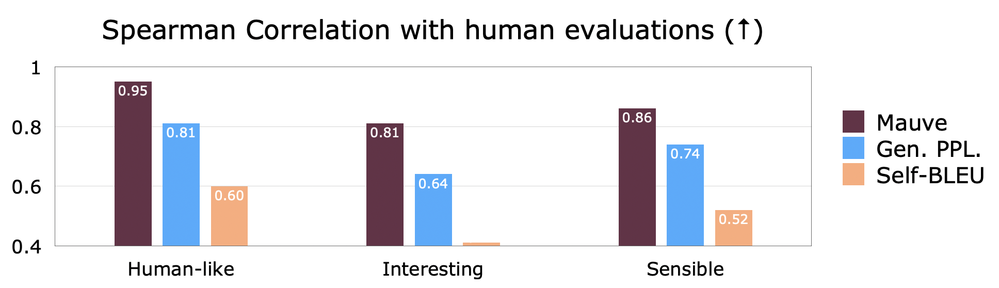
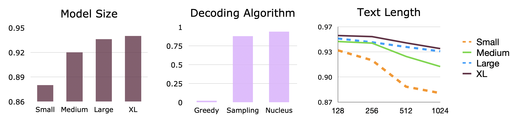
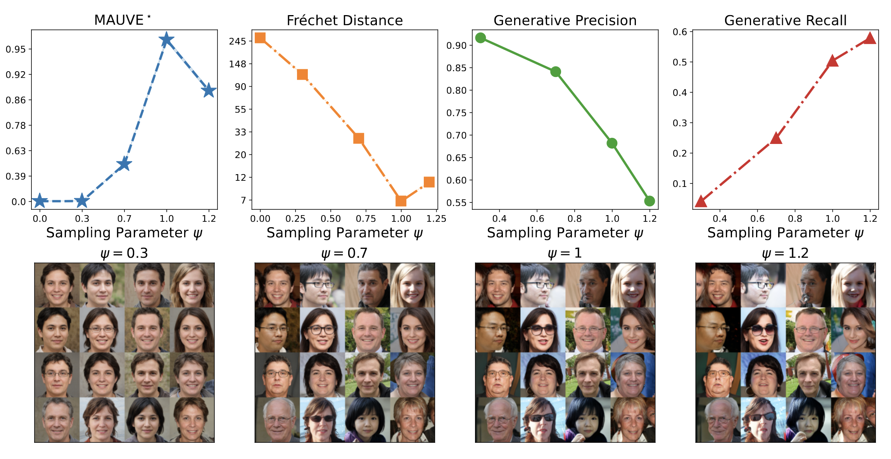
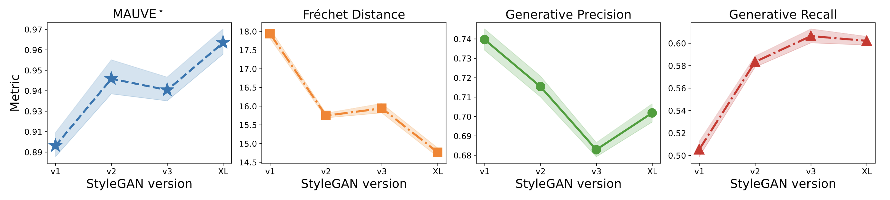
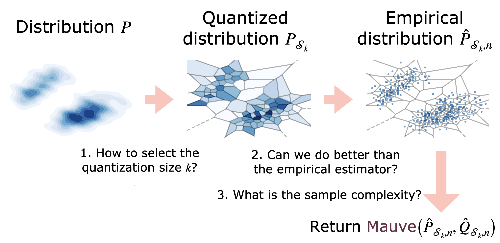
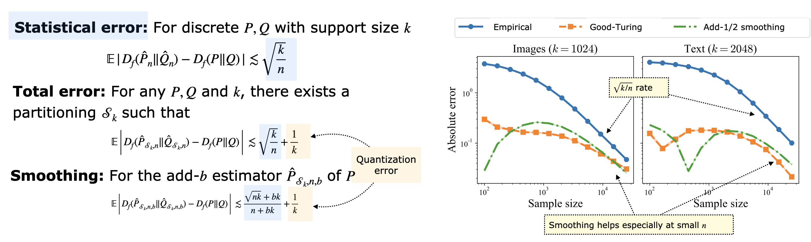

MAUVE: Statistical Evaluation of LLMs and Generative AI¶
{kind=link}
Generative artificial intelligence has made significant strides, producing text indistinguishable from human prose and remarkably photorealistic images and videos. Automatically measuring how close the generated data distribution is to the target distribution is central to diagnosing existing models and developing better ones. We present MAUVE, a family of comparison measures between pairs of distributions such as those encountered in the generative modeling of text or images. These scores are statistical summaries of divergence frontiers capturing two types of errors in generative modeling. We explore three approaches to statistically estimate these scores: vector quantization, non-parametric estimation, and classifier-based estimation. We provide statistical bounds for the vector quantization approach.
Empirically, we find that the proposed scores paired with a range of f-divergences and statistical estimation methods can quantify the gaps between the distributions of human-written text and those of modern neural language models by correlating with human judgments and identifying known properties of the generated texts. We demonstrate in the vision domain that MAUVE can identify known properties of generated images on par with or better than existing metrics. In conclusion, we present practical recommendations for using MAUVE effectively with language and image modalities.
Empirical Results¶
MAUVE correlates better with human judgements when compared to prior metrics. A A larger Spearman rank correlation means that the ranking of models obtained from the metric is closer to with the ranking derived from human judgements. We see that MAUVE’s correlations are closer to 1, implying near perfect correlation.
{kind=link}
MAUVE quantifies trends that were previously observed qualitatively. For instance, larger models are generally better, longer generations are generally worse:
{kind=link}
MAUVE identifies known properties of generated images on par with or better than previous metrics, for instance, with the sampling algorithm (here, we vary the truncation parameter for StyleGAN2-ADA)…
{kind=link}
... and with architectural improvements (here, we plot different versions of the StyleGAN model).
{kind=link}
Theoretical Results¶
The estimation of MAUVE involves two errors: from quantization and from estimating the divergences from samples.
{kind=link}
We bound both types of errors and consider smoothed distribution estimators that are better both in theory and in practice.
{kind=link}
Other Detailed Results¶
We also have several detailed comparisons and ablation studies in the paper:
Experimental Domains: Story and news article generations (language domain), and GAN vs. diffusion models (image domain)
Baselines: comparison to generative precision-recall, and metrics based on optimal transport
Methodological Choices: Comparison to other f-divergences; effect of varying the embedding: various types of LLMs and classical string kernel embedding
Algorithmic Choices: Comparison of different estimation methods: non-parametric nearest neighbors and kernel density estimators, classifier-based estimation, and parametric approximation
These studies demonstrate the strong robustness of MAUVE and justify the various design choices involved.
Software Demo¶
Install the software with pip install mauve-text or use via HuggingFace Evaluate
as follows:
>>> import mauve # pip install mauve-text
>>> p_text = ... # list of strings
>>> q_text = ... # list of strings
>>> out = mauve.compute_mauve(p_text=p_text, q_text=q_text, device_id=0, verbose=False)
>>> print(out.mauve) # prints a number between 0 and 1
References (Bibtex)¶
[1] Pillutla, K., Liu, L., Thickstun, J., Welleck, S., Swayamdipta, S., Zellers, R., Oh, S., Choi, Y. and Harchaoui, Z., 2023. MAUVE Scores for Generative Models: Theory and Practice. Journal of Machine Learning Research, 24(356), pp.1-92.
[2] Pillutla, K., Swayamdipta, S., Zellers, R., Thickstun, J., Welleck, S., Choi, Y. and Harchaoui, Z., 2021. MAUVE: Measuring the Gap Between Neural Text and Human Text using Divergence Frontiers. Proc. of NeurIPS pp.4816-4828.
[3] Liu, L., Pillutla, K., Welleck, S., Oh, S., Choi, Y. and Harchaoui, Z., 2021. Divergence Frontiers for Generative Models: Sample Complexity, Quantization Effects, and Frontier Integrals. Proc. of NeurIPS pp.12930-12942.
Acknowledgments¶
Part of this work was done while Zaid Harchaoui was visiting the Simons Institute for the Theory of Computing, and while Krishna Pillutla, Lang Liu, John Thickstun, Sean Welleck, and Rowan Zellers were at the University of Washington, and Swabha Swayamdipta was at the Allen Insitute for AI. This work was supported by NSF DMS-2134012, NSF CCF-2019844, NSF DMS-2023166, the DARPA MCS program through NIWC Pacific (N66001-19-2-4031), the CIFAR “Learning in Machines & Brains” program, a Qualcomm Innovation Fellowship, and faculty research awards.